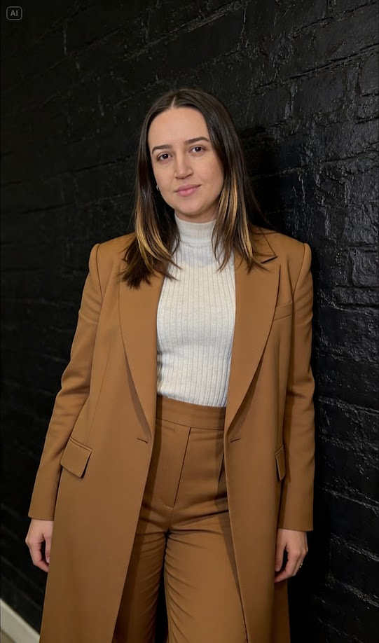

Perfil
Sou estudante de tecnologia e sigo desenvolvendo minhas habilidades em desenvolvimento web, com atenção especial à criação de interfaces responsivas, organizadas e agradáveis de navegar.

Sou estudante de tecnologia e sigo desenvolvendo minhas habilidades em desenvolvimento web, com atenção especial à criação de interfaces responsivas, organizadas e agradáveis de navegar.
Conquistar oportunidades na área de tecnologia, continuar aprendendo e contribuir com novos projetos.
Comunicação eficaz, organização, proatividade e dedicação.